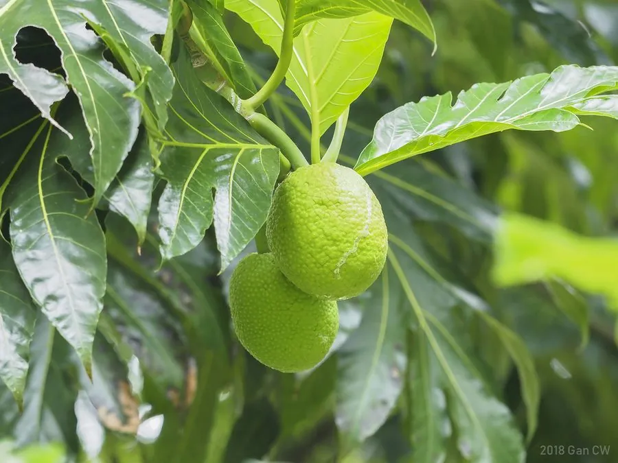

乔木 · 植物界
面包树 Artocarpus altilis

太平洋岛屿与东南亚重要的淀粉来源树种，果实烤熟后口感似面包，被称为“面包树”，一株可养活多人。
- 分类
- 门被子植物门纲木兰纲目蔷薇目科桑科属波罗蜜属
- 栖息环境
- 海拔 800 米以下的热带地区，喜高温多湿、光照充足
- 地理分布
- 原产新几内亚至马来群岛，太平洋岛屿、加勒比海地区广泛栽培；中国海南等地引种
- 保护级别
- 暂无评估；中国未列入国家重点保护野生植物名录
物种志
面包树为常绿乔木，高可达 15 m，树皮灰褐色，全株含白色乳汁；叶片大、羽状深裂，长可达 60 cm，叶面深绿有光泽。花期 3–4 月，花序单生于叶腋，雌雄花序分别着生；果实为聚花果，球形或椭圆形，直径 10–20 cm，表面具瘤状突起，成熟时黄绿色，果肉白色、富含淀粉，烤熟后口感松软似面包。
面包树原产新几内亚至马来群岛一带，太平洋岛屿、加勒比海地区广泛栽培，中国海南、广东、云南等地有引种。它喜高温多湿、光照充足，适宜深厚肥沃、排水良好的热带土壤，生长迅速、结果量大，一株成年树每年可结数百个果实。果实在未完全成熟时富含淀粉，可烤、煮、炸或磨粉食用，是太平洋岛屿居民的传统主粮；木材可制家具与独木舟，树皮纤维可制布，乳汁可作黏合剂。
形态与习性
- 株高可达 15 m，全株含白色乳汁
- 花期3–4 月，雌雄花序分别着生
- 果期7–9 月，果实直径 10–20 cm
- 光照喜光，不耐长期荫蔽
- 水分喜湿润，怕积水
- 土壤深厚肥沃、排水良好的热带土壤
- 主要用途果实烤食或磨粉、木材制家具与独木舟、树皮纤维制布
趣味知识
- 面包树的果实烤熟后松软香甜，口感像面包，因此得名。
- 一株成年面包树每年可结数百个果实，是太平洋岛屿的传统主粮。
- 面包树的树皮纤维可制成布料，木材可用于造独木舟。
- 面包树全株含白色乳汁，乳汁黏稠，可作黏合剂。